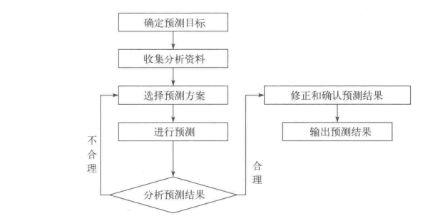
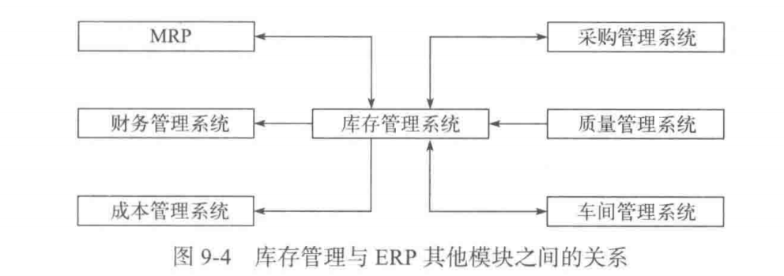

第一章
ERP是以信息技术为核心，采用现代企业先进管理思想，整合企业内外部资源的管理系统，为企业提供决策、计划、控制与经营业绩评估的全方位系统化的管理平台
供应链管理
精益生产
业务流程重组
约束理论
全面质量管理
按订单生产
按库存生产
混合模式
项目型生产
连续流程生产
第二章
ERP是以信息技术为核心，采用现代企业先进管理思想，整合企业内外部资源的管理系统，为企业提供决策、计划、控制与经营业绩评估的全方位系统化的管理平台
订货点法是一种传统库存管理方法，当库存量降至预定阈值时触发补货，适用于独立需求物料的静态管理，但无法动态适应生产变化，后被MRP取代。
集成管理系统，整合财务、生产、供应链等业务流程，实现数据共享与资源优化，提升效率和决策水平。
物料需求计划以主生产计划为依据，结合产品结构、制造流程、交货期与库存，用计算机生成各时段物料生产及采购计划。
闭环MRP通过"计划—执行—反馈"机制形成闭环控制，实时调整生产计划与资源分配，解决能力不足问题,如设备或人力调整，提升生产灵活性与效率。
① 相关需求，基于产品结构的物料联动需求；② 时间分割，按时段精确计划物料需求；③ 能力平衡，动态调整资源确保计划可行性
第三章
物料编码是以简短的文字、符号、数字、号码来代表物料、品名、规格或类别及其有关事项的一种代码体系。
唯一性:每种物料仅对应一个编码。
设计原则包括：
1. 信息分类编码体现科学化、标准化、规范化、合理化。
2. 参照国家标准中有关分类标准体系。
3. 参照企业原有的编码体系，尽量考虑企业的习惯。这样便于企业生产活动的延续性，也有利于数据的整理工作。
4. 保证编码的唯一性、可扩展性和方便性。
计划展望期是指计划的时间跨度，其目的是控制产品生产的全过程，提高计划的预见性，它必须大于产品的累计提前期。
预测步骤：
(1)确定预测目标。
(2)收集分析资料。
(3)选择预测方案。
(4)进行预测。
(5)分析预测结果。
(6)修正和确认预测结果。
(7)输出预测结果。
流程图：
如时间序列法：基于历史数据，客观准确，但无法适应突发变化。
德尔菲法：依赖专家经验，灵活应对新趋势，但主观性强。
渠道网络规划、库存分配、订单处理、物流协调、销售数据分析，经销商绩效评估与支持。
历史销售趋势、市场需求波动、经济环境、企业营销策略、产品生命周期阶段。
第四章
1. 将经营目标转化为具体产品的月度体系及销量计划；
2. 制定均衡月产率，实现资源均衡利用与稳定生产；
3. 控制库存水平或订单拖欠量；
4. 为主生产计划提供编制依据。
① 品种，按需求特征或工艺相似性划分产品系列并制定产量目标；
② 时间，以月或季度为单位的计划展望期，支持滚动调整；
③ 人员，按技能或产品分组动态调整人力
1. 滚动计划法
2. 平均法
3. 线性规划法
4. 资源清单法
5. 能力需求计划系数法
建立资源清单。
计算资源需求。
比较可用资源和资源需求。
协调可用资源和资源需求之间的差距。
撰写生产规划大纲。
第五章
主生产计划（MPS）是对企业生产计划大纲的细化，确定每一个具体产品在每一个具体时段的生产计划。
地位：主生产计划（MPS）在计划系统中处于 承上启下的核心枢纽地位，是连接战略层生产规划与战术层物料需求计划（MRP）的关键桥梁。
时段是计划的最小时间单位（如天/周），时区分为需求时区（客户订单驱动）、计划时区（订单与预测结合）及预测时区（仅预测），时间顺序为预测时区→计划时区→需求时区。例如某产品总装提前期6时段，预测时区为时段1-8，计划时区为9-15，需求时区为16-21。
毛需求：需求时区取订单量，计划时区取订单与预测最大值，预测时区取预测量。
预计可用库存量：前一时段库存+计划接收量-毛需求+计划产出量。
计划产出量：按批量策略补足净需求（净需求=毛需求-可用库存+安全库存）。
计划投入量：根据提前期倒推计划产出量的投入时间。
可供销售量：某时段计划产出量-该时段及后续时段的订单总量。
可用库存量：当前库存-已分配量。
第六章
订货点方法是一种静态的库存控制工具，而 MRP 是一种动态的、基于生产计划的全流程物料管理系统。两者的核心差异在于 需求关联性、时间规划能力 及 系统整合复杂度。
批量策略在MRP中通过固定批量与动态调整结合，优化库存管理、避免剩余累积，并需分层调整物料以减少连锁影响。
1. 固定批量法：强制按固定数量订货，库存剩余累积。
2. 直接批量法：完全按需订货，零库存但订单频繁。
3. 周期订货法：按周期汇总需求订货，平衡库存与成本。
净需求由安全库存减去可用库存得出，计划产出量根据批量策略向上取整补足净需求，确保生产可行性。
第七章
工作中心是企业直接生产的加工单元，是一组机器设备，人等生产资源的总称。
作用：
1. 核算产能，平衡任务负荷与生产能力；
2. 定义工序基础，每道工序需关联对应工作中心；
3. 作为任务分配和生产排程的核心单元；
4. 按工时定额×时间费率计算加工成本；
5. 完工信息、成本核算的直接数据来源。
关键工作中心，特别供应商，自然资源，专门技能，资金，仓库，运输，不可外协的工作。
粗能力需求计划聚焦主生产阶段的关键资源与长期平衡，能力需求计划覆盖全部工作中心并基于物料需求计划动态调整短期能力缺口。
无限能力需求计划法假设能力无上限直接排产，但实际仍需通过后续调整解决超负荷问题，并非完全忽略约束。
第八章
采购计划制定、采购订单管理、收退货管理、请购管理以及采购结算和结清。
1.JIT采购模式，按需采购，减少库存，强调与供应商的紧密协作
2.MRP采购模式，需求的相关行，需求的稳定性，计划的精细性和计算的复杂性
3.供应链采购模式，供应链企业之间实现信息连通、信息共享，处于一种友好合作的环境。
经济订货批量法
按需订货批量法
固定批量法
批量增量法
固定周期法
第九章
（1）物料存储管理
（2）物料收发（入库/出库）处理
（3）库存计划与控制
（4）库存成本核算
（5）与生产、采购、销售等部门业务协同
1.按库存物资存在状态可以分为原材料库存、成品库存、部件库存、备件库存、在制品库存等。
2.按库存用途可以分为经常性库存、安全库存、季节性库存、战略性库存、在途库存等。
（1）重要：库存是维持生产连续性、稳定销售、平衡物流与资金的关键，同时可应对市场需求波动及供应链不确定风险。
（3）零库存管理：需结合精准需求预测、供应链协同、JIT生产、柔性制造及信息化系统支持，并评估风险。
（1）定义：基于20/80原则，将库存按资金占比分为A（高价值）、B（中等）、C（低价值）三类，实施分级管理。
库存管理子系统与ERP其他模块之间的关系图如下：
第十章
（1）定义：车间管理是依据企业计划，对车间生产活动进行组织、调度与控制，确保按时、按质、按量完成制造任务
（2）主要业务：
- 生产任务下达与跟踪
- 作业排序与调度
- 生产进度与质量控制
- 能力投入产出控制
- 在制品管理
- 加工信息登记
- 统计分析
（1）主生产计划：确定生产品种、数量及时间，确保任务与整体计划一致。
（2）工艺路线：明确产品加工步骤及资源需求，指导工序顺序与资源分配。
（3）工作中心数据：评估设备、人员及产能，确保生产能力匹配任务需求。
（4）物料清单：明确生产所需物料种类、数量，生成投料单以控制领料。
（5）库存可用量：核实物料库存是否满足生产需求，避免因缺料导致中断。
派工单根据工作中心任务队列与优先级生成，分配具体工序任务；加工单明确物料加工要求，派工单细化到工作中心执行细节。
1.列出零件组的工序矩阵。
2.在工序矩阵中选出加工时间最短的工序。
3.将已经排序的工件从工序矩阵中消去。
4.继续按照以上两步骤进行排序，直至所有工件排序结束。
（1）汇总各零件工序加工量，将加工量最大的工序定义为关键工序。
（2）比较零件首尾工序，首＜尾分第一组，首＝尾分第二组，首＞尾分第三组。
（3）各组分别对组内零件进行排序
（4）整体排序：第一组最前，第二组中间，第三组最后。
第十二章
直接成本，间接成本
标准成本、模拟成本和实际成本
1.作业消耗资源，产品消耗作业。
2.产品通过作业引发间接费用，按成本动因分配费用。
3.引入成本动因，按作业分摊制造费用，反映真实资源消耗。
4.识别成本根源，在作业层面控制成本。
1.直接材料成本差异
2.直接人工成本差异
3.变动制造费用差异
4.固定制造费用差异
准确核算成本、实施动态预测、分析成本差异、优化资源配置